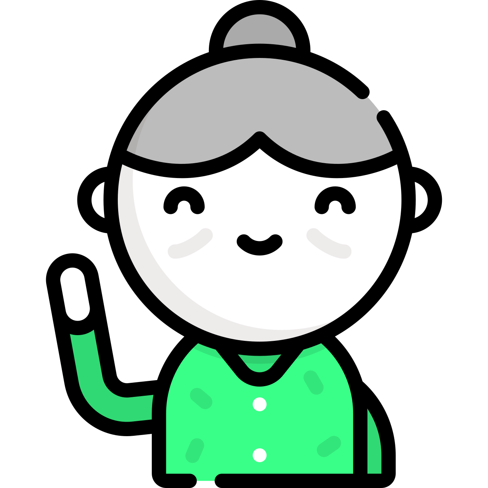
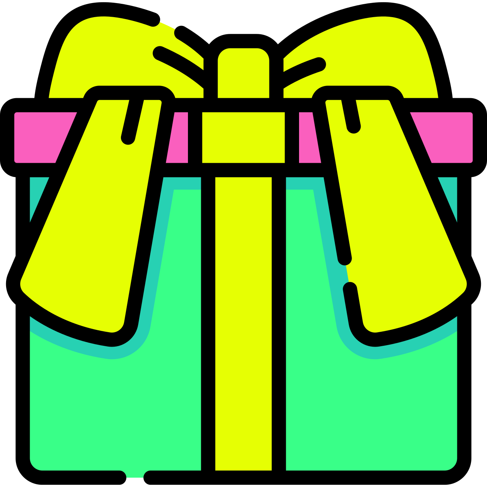
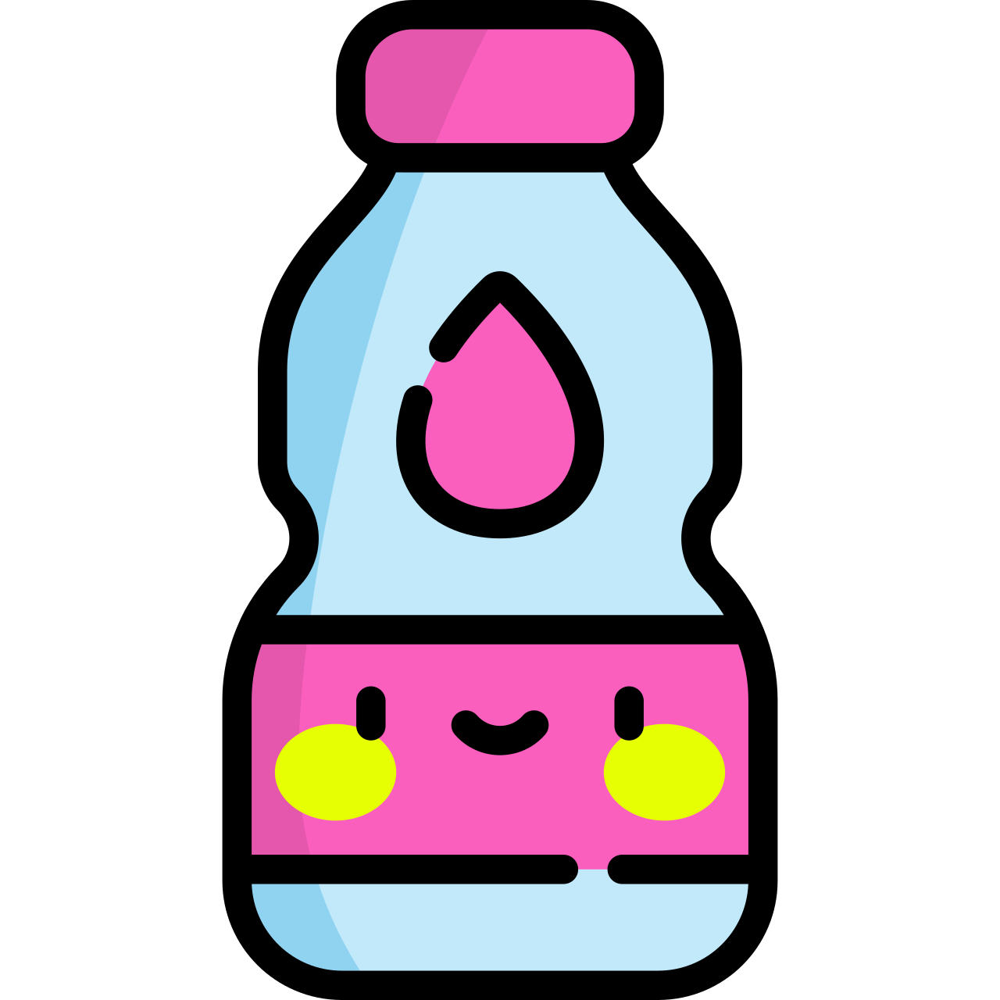
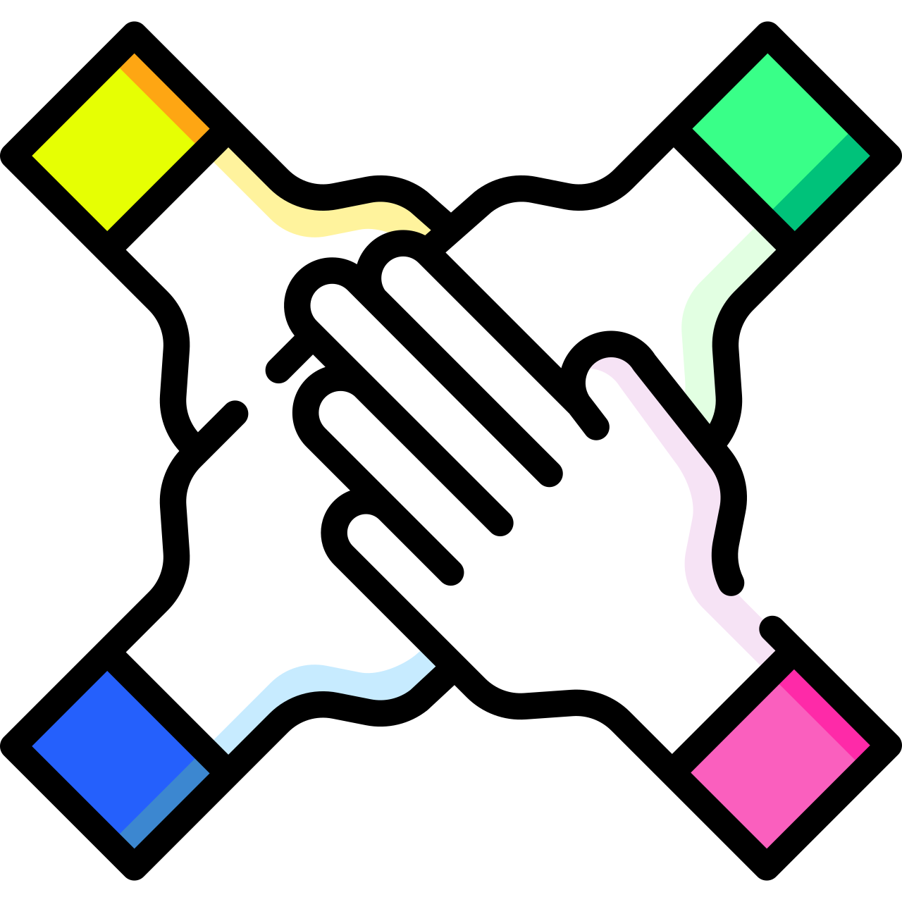
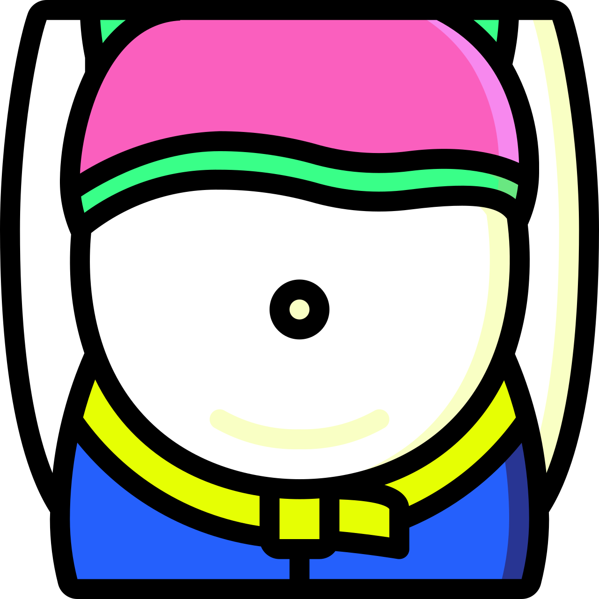

האושר כבר פה – המדריך לשגרה החדשה שלך
לעיתים נדמה ששכחנו שיש חיים גם בלי האהבה, שהאושר תלוי רק בו/בה ובזוגיות המשותפת. קודם כל עלינו לזכור שהאושר בא מבפנים והוא תלוי אך ורק בנו. קבלו את 10 הדיברות לשגרה החדשה שלכם, הצלחה מובטחת למתמידים!
1. אל תהיי פולניה- הכרת תודה
ההתמקדות ביש ולא באין היא העיקר! לכולנו יש נטייה להסתכל רק על חצי הכוס הריקה במקום המלאה. שינוי ההרגל הזה יכול לשנות את התחושה הכללית שלכם ברגע! למידע נוסף כנסו לדף משפטי העצמה.
2. די לאכול סרטים, זה משמין
מומלץ לצמצם כמה שיותר את משך הצפייה במסכים ולנהל כמה שיותר אינטראקציה עם האנשים שסביבכם. חכם סיני אמר פעם: "חברים טובים הם התרופה לחיוך".
3. תתחדש מותק!
נסו להיות מודעים במהלך היום ל-5 דברים חדשים סביבכם שלא שמתם לב אליהם קודם, עשו סיבוב בפארק מול הבית, אמרו שלום לשכן החדש. אנשים ומקומות חדשים מביאים עימם הזדמנויות חדשות.
4. תניחו את הגלידה
איכות החיים וקצב החיים שלכם ישתנה בצורה מהותית אם תתחילו לבצע פעילות גופנית שתנתק אותכם מספר פעמים בשבוע מהשגרה. מומלץ לבצע את הפעילות הגופנית עד 5-6 שעות לפני שהולכים לישון.
5. לכו לישון!
שינה היא מצרך חשוב ומהותי לגוף שלכם כדי להתחזק ולשמר אנרגיות. הקפדה על שעות שינה קבועות תתרום לשימור האנרגיה שלכם. מומלץ לא להכניס מכשירים אלקטרוניים לחדר השינה ולהימנע מצפייה במסכים.
6. מים, מים, מים
אין ספק שמים זה מצרך חשוב התורם למראה עור הפנים, מזרז ירידה במשקל ובהחלט נותן תחושה טובה יותר. השתדלו לשתות בין 10 ל15 כוסות ביום!
7. הכל עניין של איזון
כשאתם מגיעים לביתכם או יוצאים מהעבודה השתדלו להשאיר את העבודה במקומה. לצאת לבלות או לפתח תחביב לאחר יום עבודה עמוס ונסו להתעסק בדברים אחרים.

8. לתת- להתנדב זה הדבר.
מצאו מישהו/משהו אליו תרצו לתת מניסיון החיים שלכם מליבכם או מזמנכם ותגלו עולם שלם של נתינה לזולת. על פי פסיכולוג מאוניברסיטת מינסוטה בארה"ב, אנשים שמתנדבים נוטים להיות מאושרים יותר ובעלי הערכה עצמית ורווחה נפשית גבוהות יותר.
9. תקשיבו לתחושות הבטן
אין דרך נכונה או לא נכונה ולעיתים האינטואיציה הראשונית שלכם יכולה להוביל אותכם למקומות טובים. זכרו כי אתם אלה שקובעים את הדרך ואפשר לנסות לשנות אותה אם לא מרוצים.
10. Fake it until you make it
לעיתים לחייך גם כאשר לא מרגישים צורך יכול לשנות את מצב הרוח שלכם במהלך היום ויותר מכך גם לגרום לאחרים להרגיש צורך לחייך.